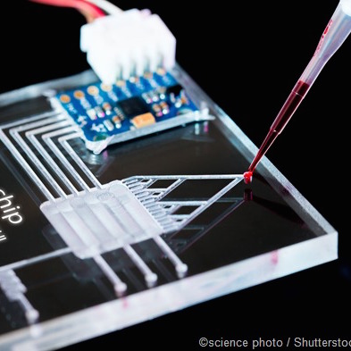
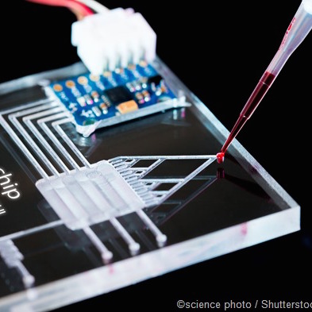

A new website is launched for the project "Fishing in the Wind"
This website will post updates on the "Fishing in the Wind" project sponsored by New Jersey Sea Grant Consortium. The research is targeted to assess the impact of offshore wind energy development and climate change on the summer flounder distribution in New Jersey. Statistical models will be developed to predict the habitat distribution of summer flounders and numerical model will be developed to examine the change in physical oceanography. Please check this link for more details

 
